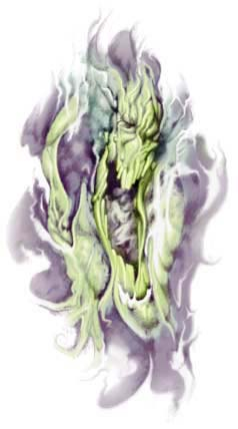

大型异怪 (跨位面)

| 生命骰： | 9d8+36 (76 hp) |
| 先攻： | +9 |
| 速度： | 40 英尺，飞行 30 英尺（完美） |
| 防御等级： | 16 (�C1 体型，+5 敏捷，+2 天生)，接触 14，措手不及 11 |
| 基本攻击／擒抱： | +6/+10 |
| 攻击： | 灼热之触 +6 近战 |
| 全力攻击： | 2 灼热之触 +6 近战 |
| 伤害： | 灼热之触 1d10 火焰伤害 |
| 面宽／触及： | 10 英尺/10 英尺 |
| 特殊攻击： | 死亡毒气，脱水，灼热灵光 |
| 特殊能力： | 免疫强酸，黑暗视觉 60 英尺，伤害减免10/魔法，闪电抗力 20，免疫火焰，气化形态，免疫，难测心智，免疫毒素，法术抗力 21（译者注：这里的免疫immunities，下文并没有详述，） |
| 豁免： | 强韧 +7，反射 +8，意志 +6 |
| 属性： | 力量 11，敏捷 20，体质 19，智力 10，感知 11，魅力 10 |
| 技能： | 躲藏 +9，潜行 +13，侦察 +8 |
| 专长： | 战斗反射，闪避，精通先攻，武器专攻（灼热之触） |
| 地域： | 任意地表和地下 (焦炎地狱) |
| 组织： | 单独或成对 |
| 挑战等级： | 11 |
| 宝物： | ― |
| 阵营： | 总是中立邪恶 |
| 进化： | 10�C19 HD (大型)；20�C27 HD (超大型) |
菲乌尔被认为是遭杀害元素生物的非实体insubstantial之灵，它们如同有知觉的活体蒸汽柱，在焦炎地狱（Gehenna）第一层荒凉的峭壁上游荡。
由苦难、痛苦、饥饿、酷热和有毒蒸汽的邪恶混合物构成，菲乌尔像是一团翻滚搅动、绿色与紫色混杂的瘴气。集中注意力观察，旁观者或许能在混乱中分辨出一个大致的人形，隐约可见细长的臂膀或饱受折磨、咧着嘴的扭曲长脸。
菲乌尔通常成对行动，尽管这是它们种族内部唯一显露出的身份认同迹象。它们是否从捕食凡人中汲取维持自身存在所需之物，是学者们争论不休的话题，这些学者偶尔能在主物质位面捕获一两个用于怪异扭曲的实验。然而，菲乌尔不效忠任何主人；它们唯一的目标似乎就是摧毁遇到的任何其他种类的生物。
菲乌尔不会说任何可听见的语言，但它们似乎彼此之间能交流。
菲乌尔知道它的灼热之触无法造成多少伤害，因此它更倾向于飞在敌人上方，这样它就能让尽可能多的敌人暴露在死亡毒气之下，同时避免近战风险。此后，它会俯冲发动脱水攻击，直至所有敌人被消灭。
死亡毒气 (Death Gas) (Ex)：任何在菲乌尔 50 英尺范围内、易受毒素影响的生物必须成功通过一次强韧豁免（DC 18），否则立刻受到 1d10 点体质伤害，并在 1 分钟后受到另一次 1d10 点体质伤害（除非再通过一次 DC 18 的强韧豁免）。成功抵抗菲乌尔死亡毒气的生物，在一天内对该菲乌尔的毒气免疫。
脱水 (Desiccate) (Ex)：任何在菲乌尔回合结束时处于其占据方格内的角色，必须进行一次强韧豁免（DC 18），否则获得两个负向等级。移除其中一个负向等级的豁免检定 DC 也为 18。
灼热灵光 (Heat Aura) (Ex)：任何在菲乌尔 30 英尺范围内的生物必须成功通过一次强韧豁免（DC 18），否则受到 1d6 点火焰伤害。将此效果视为一个持续从该生物身上辐射的爆发。
气化形态 (Gaseous Form) (Ex)：菲乌尔的非实体insubstantial形态使其免疫重击。菲乌尔不能奔跑，但可以（缓慢地）飞行，并且受风影响。它不能穿戴盔甲、操控实体物品或进入水中或其他液体。它可以穿过小孔或狭窄开口――甚至仅仅是缝隙。它也可以占据被敌人占据的方格（见上文的脱水）。
难测心智 (Inscrutable Mind) (Ex)：任何试图与菲乌尔心智建立心灵感应链接的生物（通过侦测思想、灵能能力、支配怪物等），必须成功通过一次意志豁免（DC 14），否则将如同受到一个 9 级术士施展的弱智术（feeblemind）效果影响。